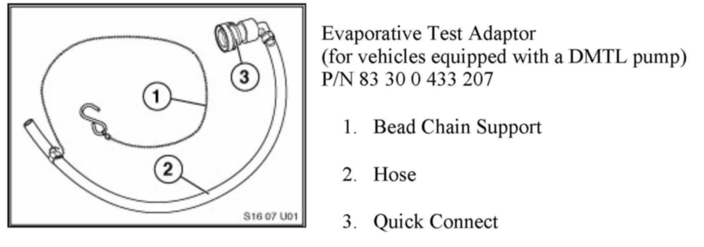
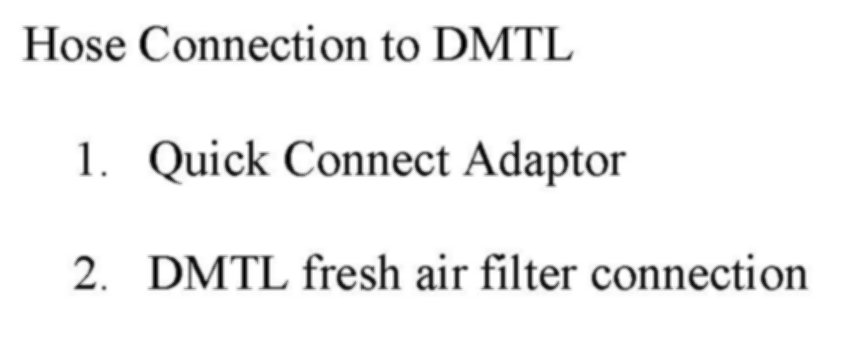
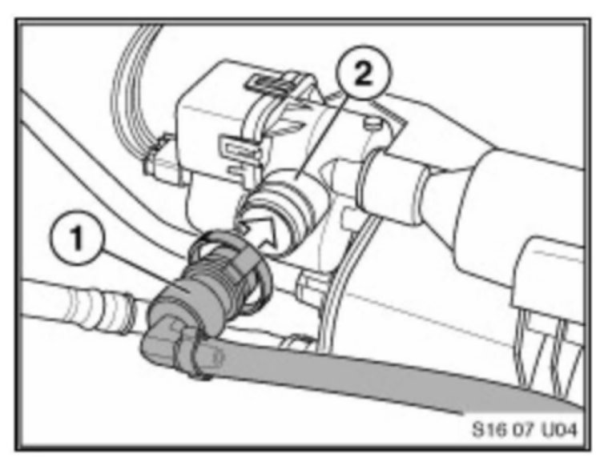
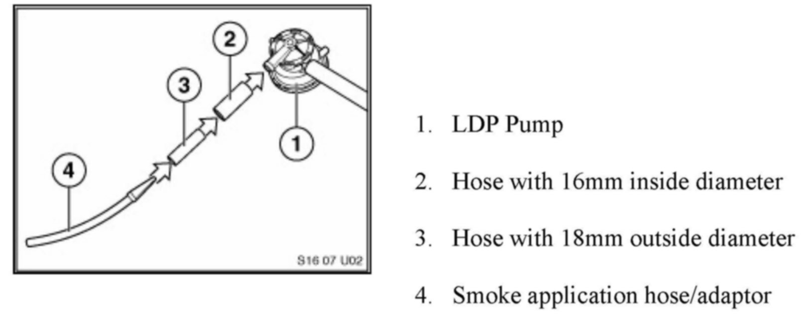
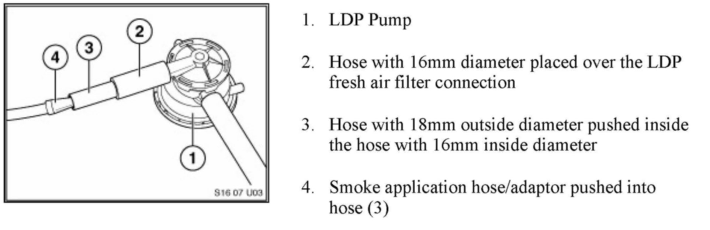
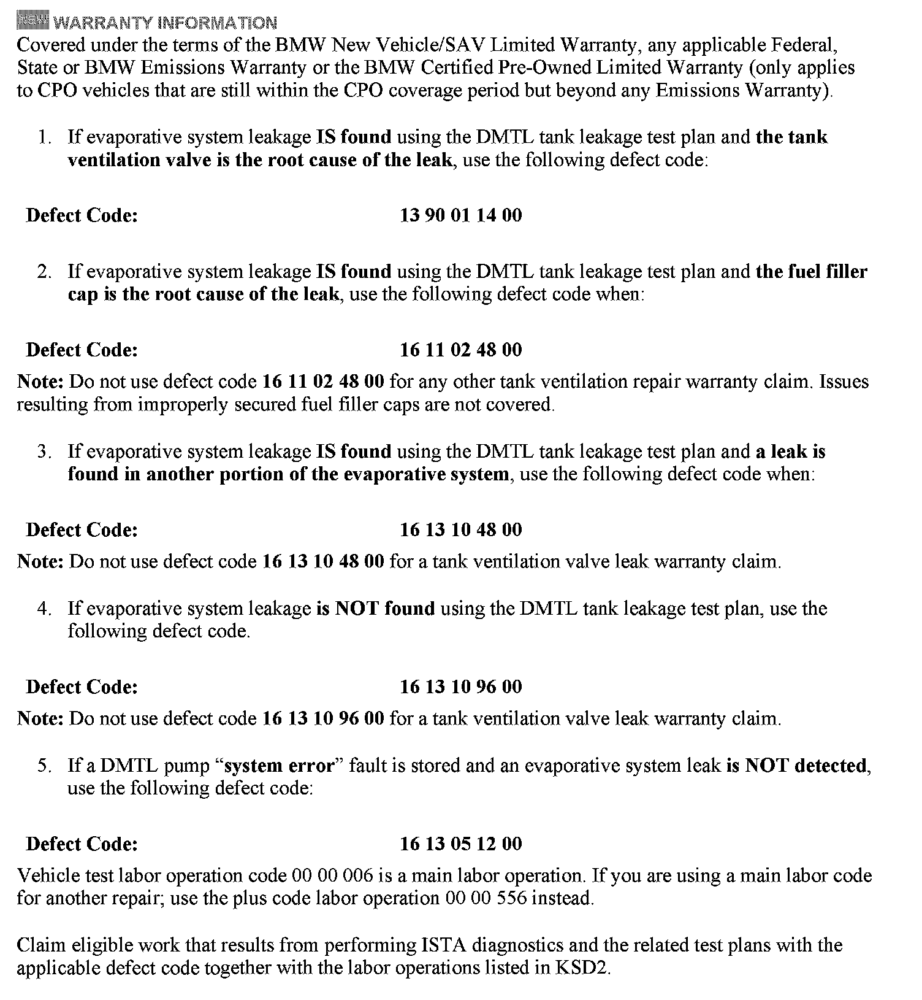

Emissions System - Evaporative System Leak Testing
SI B16 01 07Fuel Supply Systems
September 2011
Technical Service
This Service Information bulletin supersedes SI B16 01 07 dated March 2010.
[NEW] designates changes to this revision
SUBJECT
Testing Evaporative Systems for Leaks
MODEL
All
[NEW] EVAP SYSTEM TANK LEAKAGE DMTL TEST MODULE OPERATING HINTS
Evaporative system leakage is found using the DMTL tank leakage test plan:
If a leakage is found to be present using the DMTL leakage test plan, the following points should be verified.
1. Check that the fuel cap is properly closed.
2. Testing the evaporative system requires all venting pipes and electrical connectors to be properly connected.
3. Search for leakage; if needed, use the VACUTEC(R) Smoke Machine 625-522B-BMW.
4. Do not replace the DMTL pump or fuel cap.
Evaporative system leakage is NOT found using the DMTL tank leakage test plan:
Only perform the applicable test plans for the faults stored. Performing additional leak measurements using a smoke machine on a vehicle that does not fail the DMTL leakage test plan will not be reimbursed by Warranty. Do not replace the fuel cap, DMTL pump or carbon canister.
DMTL pump "system error" fault is stored in the vehicle:
Only perform the applicable test plan for the fault stored. If the test plan states to replace the DMTL pump, only replace that component.
^ Do not smoke test the vehicle.
^ Do not replace the fuel cap.
^ Do not drain the fuel tank or refill.
TROUBLESHOOTING HINTS WHEN USING THE VACUTEC SMOKE MACHINE
Testing evaporative systems for leaks is very challenging. We have developed some diagnostic hints, along with the introduction of a new special tool, to properly connect a smoke machine to the DMTL
fresh air vent/filter connection.
Recently the VACUTEC(R) Smoke Machine 625-522B-BMW was added to the BMW Equipment Program. The VACUTEC(R) Smoke Machine 625-522B-BMW is the only approved testing device for the fuel and evaporative systems. This device automatically converts air to high purity nitrogen, using Pressure Swing Absorption (PSA) nitrogen technology. Orders for the VACUTEC(R) Smoke Machine 625-522B-BMW, can be placed by calling the BMW Equipment program.
[NEW] Included with the new VACUTEC(R) smoke machine are various caps and adaptors to help connect the applicator hose to the vehicle. It is always suggested not to disturb the system before testing; try to create as little disturbance as possible to the system when connecting the smoke machine. This smoke machine utilizes an UltraTraceUVF smoke solution. The smoke solution incorporates an ultraviolet dye, which helps pinpoint the leak with an ultraviolet residue surrounding the leak area. Determining the source of the leak is made easy when the included Hi-Density True UV LED light and incandescent white light are used.
[NEW] When testing the vehicle's evaporative system using the flow meter on the VACUTEC smoke machine, the ball indicator should not lift from the zero measurement on the scale when the system is leak-free. All BMWs are designed to be 100% leak-free. A flow meter indicating zero flow would be the same as placing your finger over or kinking the application hose of the VACUTEC smoke machine (no flow = 100% leak-free).
For more information regarding evaporative system testing, describing possible fire hazards using oxygen vs. nitrogen, please refer to the following SAE web site:
www.sae.org/technical/papers/2007-01-1235
Shown below is the Evaporative Test Adaptor, which can connect directly to DMTL (Diagnosis Module Tank Leakage) pump-equipped vehicles only after the fresh air filter connection has been removed. When properly connecting the tool to the system, the main benefit is that it does not disturb the integrity of the system. This tool should be used anytime the vehicle is in the workshop for a small or large leak in the evaporative system. Shown in the picture is the tool connected to the DMTL at the fresh air filter connection.

Evaporative Test Adapter
(for vehicles equipped with a DMTL pump) P/N 83 30 0 433 207


Hose Connection to DMTL

When properly connecting the tool to the system, the main benefit is that it does not disturb the intergrity of the system. This tool should be used anytime the vehicle is in the workshop for a small or large leak in the tool connected to the DMTL at the fresh air filter connections.


All vehicles equipped with a LDP (Leak Diagnosis Pump) system
Vehicles equipped with the LDP system will require a series of small pieces of rubber hose to adapt the smoke machine application hose.
NOTE:
It is important that the initial test of the system is conducted with the system intact; avoid disturbance of the system. All electrical connectors and ventilation pipes should not be disturbed, because an intermittent issue could be disturbed and nothing will be found during the test plan. Electrical connector seals and pin or socket grommets are important parts of the system's integrity; each component relies on the electrical connectors for proper sealing. Removing these connectors during testing will result in an incorrect diagnosis of the system.

[NEW] WARRANTY INFORMATION